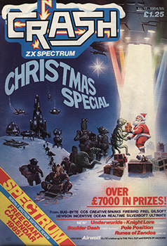
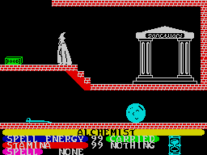
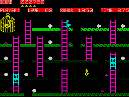
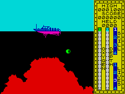
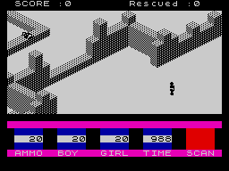
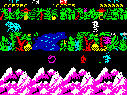
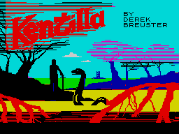
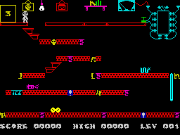

Lloyd Mangram LOOKS BACK At 1984
Taken From CRASH Issue No. 12, Christmas Special 1984/85
It seems amazing that a year has gone by since I was last handed the job of writing an article which looked at the happenings of a past year, for what was then an embryonic magazine with the peculiar name of CRASH. In looking back, I'm tempted to say 1984 was probably the year of CRASH, but I can't really concern myself entirely with this publication, as it's the software I'm supposed to deal with here! One thing I will say, is that it has been a hectic and eventful year for CRASH, with the magazine going from strength to strength, often threatening to outstrip the resources of the small team that puts it together, but it's been fun. Actually, I'm at a slight disadvantage, because my ever-ready CRASH Binder is missing issue one as someone nicked my copy before the binders came along, and then the issue sold out entirely! Anyway, here goes...
Spotting trends and commenting on them with hindsight, is the main forte of journalists, possibly because it gives us a feeling of superiority linked to a sense that 'we were not responsible'. On the other hand, trend-spotting is not only fun, it can also be truly informative. If I had to sum up 1984 very quickly I would point to the rise of the adventure, the death of the arcade shoot em up, the software slump, the dramatic improvement in software and programming, the rise of the TV/film/game link up and the mingling of arcade with adventure.
The year is going out, significantly, the way it came in. Ultimate gave us Atic Atac and pointed the way to arcade/adventures, a trend they have pursued relentlessly through a mere handful of four games to the excellence of Knight Lore. Ultimate have steadfastly refused to 'talk' to the computer press, never appear at shows, have avoided all software house link-ups that seem to have been the way of life through 84 and have released very little but very select, product. Obviously the public love it.

Atic Atac was pointing the way towards a new concept in arcade games, and suggested that arcade players didn't just want mindless zap games. Other software houses were to provide more such entertainment, but looking at the reviews in the March issue (many of which appeared at the end of January and during February), there wasn't much sign of it yet. Imagine seemed to be trying with Alchemist, but in truth the game was a lot of hot air and Stonkers kept crashing, though it did prove that a better looking wargame was a distinct possibility. Throughout 84, an obvious trend from 83 is apparent. In 83 everyone was copying arcade originals, in 84 they started copying each other, or is it just synchronicity at work. The March issue carried reviews for Ocean's Hunchback (a licenced arcade copy) and Mr. Micro's Punchy. Generally we preferred the latter, although sales of Hunchback indicated disagreement/here. I'll call this the 'self-copy' trend, as it crops up again and again.

If arcade copies were on the wane, arcade high scoring games were not. A&F had their enduringly popular Chuckie Egg out, and Fantasy were climbing the charts with Doomsday Castle featuring super hero Ziggy who, appropriately enough, has emerged again for the end of the year in Backpackers Guide to the Universe. Chuckie Egg has gone into the annals of history along with Lunar Jetman as one of the ace hi-score games. Bug-Byte modestly released Birds and the Bees on which Matthew Smith had worked and followed it up with the much better Antics on which Matthew Smith did not work. But Matthew's name was on everyone's lips with the news that Manic Miner follow up Jet Set Willy was imminent. It wasn't though. Two outstanding programs also appeared then, Fighter Pilot from Digital Integration and Wheelie from Microsphere. The former showed just how far the Spectrum could go (it's gone further still) and how exciting a simulation could be, the latter was just a damned good, original game with super graphics. Add to this the smart 3D graphics of Android 2 by Vortex, and at times Space Invaders never looked further away. Not so, however, 84 has produced some real crock games too.
Quite a few crocks appeared in a self-copy battle to be the first with a real 'Pole Position' game. Ones that come to mind are Grand Prix Driver, Britannia, a bit unplayable but novel graphics; Speed Duel, DK'Tronics, completely unplayable and rather boring graphics; Psion's excellent Chequered Flag, which differed from the others by being more of a simulation; there was the scandal over rip offs from Spirit Software and their steering wheel version called Formula One, which when it finally turned up was a very damp squib indeed; Activision recently had a go with the novel Enduro; the best was probably Micromega's great Full Throttle; and last, not entirely least, the one that spawned the whole thing, Atarisoft have managed to limp out with Pole Position.

Back to the earlier months. Durell joined another self-copy with Scuba Dive, abandoning outer space for what scientists like to call inner space. The underwater theme was also picked up by Bug-Byte in Aquarius, which wasn't so good, by Richard Shepherd in the awful Devils of the Deep and later by C.R.L. in their lightweight but fun Glug-Glug. Of all, Scuba Dive was the best and most playable.
Moving on a month, the crop of the crocks was improving as the Christmas 83 boom receded into the slough of despond. C.R.L. offered two completely pathetic games, Caveman and Lunar Lander. Music publisher K-Tel graced us with abominations called 'double-siders' end proved that music for pleasure is one thing but MFP also stands for More Failed Programs. It's a sign of the times that K-Tel took stock during the year, gave themselves a new marketing image in Front Runner and have just released the excellent Boulder Dash, which is so good it absolves them of their earlier horrors. March and April was also the time when that other publisher of music Virgin, who like K-Tel had never found a game worthy of the name, brought out Dr. Franky and showed there was hope for them. They too have improved their position enormously, releasing the odd but good Strangeloop a couple of months back.
Digital Integration proved that Fighter Pilot wasn't a flash in the pan by releasing Night Gunner, more a game than a simulation, and Artic pulled themselves together on the arcade front with Bear Bovver. The uneven R&R started another self-copy theme in helicopters with Chopper X-1, a rather second rate game which paved the way for Richard Wilcox and Blue Thunder. Loath to leave a flying idea, the altered Wilcox as Elite is about to release Airwolf based on the current telly series. Just recently Durell have continued the theme with their excellent simulation/strategy game Combat Lynx and somewhat belated, we still await Digital Integration's game based on a helicopter.
Going onto the May issue we were treated to a real mix of good and bad. Ignoring the bad, April/May saw the release of some excellent programs, among them Derek Brewster's amazing Code Name Mat released by Micromega. 84 could well be called the Year of Micromega, having started off well with the 3D Deathchase, CNM added to their lustre, Full Throttle polished it to a shine and the last three releases Braxx Bluff, Kentilla and Jasper have shown a willingness to go for the unusual and the best. Hewson Consultants also went from strength to strength, releasing the third in Steve Turner's Seiddab trilogy, 3D Lunattack. The experience gained with these games finally led to Steve turning in the advanced 3D adventure Legend of Avalon.

We had been treated to a special preview of Software Projects' monster release Jet Set Willy and took screen shots of it which later caused much confusion because they didn't match with the actually released game. One writer even accused us of faking as the preview shots showed screens all with capital letters for the under titles on some and a mixture of capitals and lower case on others, Matthew Smith would never do this we were told. But he did. There's no doubt that the release of JSW was the biggest event for ages. It wasn't long, however before the ace hackers started complaining - something was wrong with the program, and so it seemed. But the Attic bug doesn't seem to have put anyone seriously off enjoying the most torn apart game in history. You could almost say that Jet Set Willy was poked to death.
It was also the month that a new company called Gargoyle Games delighted us with an old fashioned shoot em up with modern 3D graphics called Ad Astra. We were all rather pleased with ourselves at CRASH because we were the first to spot the game and push it. Our faith has not been misplaced as Gargoyle's latest mammoth graphic adventure Tir Na Nog proves.
Insignificant at the time, was a game called Space Station Zebra, which we didn't think much of, from another new company calling themselves Beyond Software. Little were we to know (as they say in good adventure stories...)
After a long pause Imagine threw out the disappointing Pedro and prepared to nose dive into bankruptcy. Summer was approaching.
The June issue looked a bit thin on good games, the crocks predominating. Hewson's Fantasia Diamond gave adventurers a lot to think about, as did the second in Incentive's Ket Trilogy - Temple of Vran. Otherwise the only bright light really was Beyond's Psytron, a game which has led many into argument over its merits. We liked it a lot. At the launch in London we also got to see a glimpse of a new type of adventure/ strategy wargame called Lords of Midnight.

June/July brought the summer slump into brighter focus - hardly anything to report, but wait! Ultimate to the rescue! Sabre Wulf caused controversy over the almost doubling in price, but few argued with the game's graphics. We liked Ocean's Moon Alert, also a subject of a self-copy theme, with the Visions Moon Buggy and Anirog's game of the same name all out. Rabbit had also promised a Spectrum version of their C64 hit on the theme called Troopa Truck, but the company's demise quashed that.
Sinclair gave us a sudden spate of releases, mostly average to mediocre with the exception of the excellent Stop the Express, and Imagine continued down the slippery slope with the execrable Cosmic Cruiser. Melbourne House, now very late with the long awaited Sherlock, diverted our attention from their problems with Philip Mitchell's graphic entertainment Mugsy, while Silversoft, very quiet of late, slipped out with the highly original Worse Things Happen at Sea.
July/August saw the release and instant pedestal placing of Beyond's Lords of Midnight. One software house who always seemed to have just missed was Mikro-Gen, but with the creation of Wally Week in Automania, they changed all that, managing to follow it up with the more recent and better still Pyjamarama. Other high spots were Rapscallion from Bug-Byte and TLL from Vortex both boasting strikingly different graphics. Micromania made a bid for the hi-score stakes with Kosmic Kanga, and the month saw another brand new software house emerge with the capacity for fine programming - Realtime with their definitive 'Battle Zone' type game 3D Tank Duel. Once again the CRASH team felt they were helping to create a software house, by pushing something they believed in, and once again the faith was not misplaced as Realtime worked on their latest release, Starstrike, now out.
July/August proved to be about as dead as it could get with only a furious shoot em up from Creative Sparks to enliven proceedings. Black Hawk was curiously old fashioned, but fun to play. For adventurers the long-awaited release of The Hulk proved that graphics make adventures look good, but that more is sometimes required to make them good to play. C.R.L. take the credit for being the first software house out with the self-copy theme of the year - the Olympics. Their aptly named Olympics had been a gross disappointment, and Automata's Olympimania was the usual load of anarchic fun, but Database, publishers of Micro User, were the first with a serious treatment in Micro Olympics. Buffer also did a program, and Melbourne House have continued the theme with Sports Hero as have Hill MacGibbon with Run for Gold (reviewed in the next issue), but the best liked is from Ocean with Daley Thompson's Decathlon.
Just to prove that although Spectrum games seemed to be improving in technique all the while a real crock could get through, Mastertronic got their adventure for all time reviewed after a reader wrote in saying we hadn't done it, and why not as it was fab. Voyage into the Unknown got, I think, the lowest rating ever from CRASH at that time. It was only beaten by Elephant's stupendously bad Kosmik Pirate.

With September/October things looked as though they should brighten up with the pre-Christmas rush to look forward to. And in some respects things did. The October issue saw Micromega out with Braxx Bluff and Kentilla by Derek Brewster; Frank N. Stein from P.S.S., which proved to be quite a good platform game, while Silversoft were busy proving that old themes could be reworked to provide a tight new game in Hyperaction. Sherlock finally arrived, one year late and catching trains from the wrong station, and a new company called Gremlin Graphics introduced us to the dusty wanderings of Monty Mole, possibly the first game to really look like it could steal the laurels from the as much maligned as hacked and played Jet Set Willy. C.R.L. started the trend of producing the game of the film by releasing the slightly disappointing Terrahawks, which was nevertheless a better experiment than their game of the music version of War of the Worlds. The competition for securing licences from Hollywood and Shepherds Bush is hotting up with Ocean and Elite fighting over Airwolf (Elite won this one), C.R.L. releasing the game of megahit Magic Roundabout, Activision scooping on the super hit film Ghostbusters, DK'Tronics securing Minder and Popeye, and now Elite have Fall Guy out and so on.

Which more or less brings us up to date, as the Christmas software fights it out to be top of the chart. Amongst the recent releases I have a few personal favourites that I would like to see do well, and oddly one of those is Deus Ex Machina from Automata. I think it's over priced, but I can see that it must have cost quite a bit to produce. I think Micromega's Jasper is very good but I fear it will be, or already has been, overshadowed by games like Jet Set Willy and Monty Mole. It's different in many respects, however, and deserves to do well. Another favourite is the remarkable Skool Daze from Microsphere, which I like because it is realistic, anarchistic, and puts school where it belongs - in perspective. Most of my other current faves have already been mentioned in passing.
Company trends over this year have been all over the place. We have witnessed the disappearance of Imagine, Rabbit and Carnell to name some of the bigger ones. Rabbit, like Imagine, seemed in retrospect to survive more on hype than product, although Rabbit's hype was aimed more at the trade than the public, which was their huge mistake - they just couldn't see that no one wanted the rubbish they produced for most of the time. We have also seen big business move in with names like Thorn EMI (Creative Sparks) who, like Virgin and K-Tel made a reassessment of what they were doing earlier this year. Now Busby has a rival in British Telecom's Firebird, the overweight and sluggish Atari have tried hard to break in with over-priced versions of their arcade originals, but it all seems to be a case of too little too late.
A software house from the earliest days who went quiet during the year is Quicksilva. Their Fred and Snowman made some impact but not as much as the earlier Ant Attack or Bugaboo. Concentrating rather more on conversions on the C64, they were bought out by Argus Press in the meddle of the year, and I can't help wondering whether the loss of independence to a corporate giant won't lead to a greater sense of apathy. I hope not. The Ant Attack follow up from Sandy White, Zombie Zombie was, I thought, a bit of a disappointment.
One of the biggest successes has to be Ocean who started out as Spectrum Software, but through clever marketing policies, linking themselves to a distributor, buying in American software for conversion and careful control of product, have made themselves the true successors to the image Imagine tried to create. As if to seal that image, Ocean recently acquired the Imagine title. But what has also been most encouraging is that throughout 84, new and often small software houses have emerged, fighting hard and with often excellent product. They still form the backbone of this business and help make it all worthwhile.